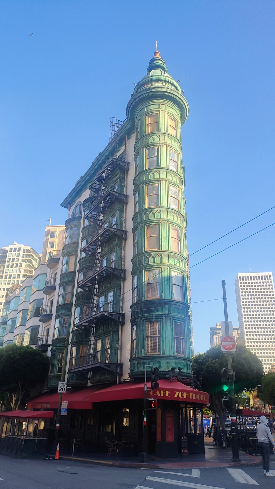

Urban Concierge - Bay Area
Monday Nov 23 – Wednesday Nov 25, 2026 · Snapshot compiled Mon Nov 23, 2026, 6:20 am PT (Urban Concierge - Bay Area)
- NWS: Coastal Flood Warning Mon Nov 23 6:10 am to Thu Nov 26 4 pm.
- NWS: High Surf Warning Wed Nov 25 12 am to Thu Nov 26 12 am.
- NWS: Tue Nov 24 rain after 4 pm, 100%, gusts to 35 mph; Tue night 0.75-1 in.
- BART: Powell St. 4th and Market entrance closed Nov 16 to Dec 18.
What's on


Boards of Canada "Inferno" LISTEN, Mon Nov 23
Envelop SF, 900 Marin St (enter via Michigan St).
Details →30–9:30 pm (doors 5:15)
The West Coast Blues Revue, Tue Nov 24, 6
Biscuits and Blues, 401 Mason St.
Details →Laughs and Blues, Wed Nov 25, 7–8:30 pm (doors 5:15)
Red Curtain Presents
Biscuits and Blues, 401 Mason St.
Details →
More in this brief
Where to eat

No Yelp ratings. Descriptions from restaurants' own pages.
Rich Table, Hayes Valley. Its page: "Go to the market, see what's good & cook it." Page also announces RT Bistro (newly opened) and lists hours 11 am–9 pm daily (as parsed; confirm on page). https://www.richtablesf.com/
Foreign Cinema, Mission. Californian-Mediterranean cuisine; indoor dining room with fireplace and open kitchen, heated courtyard with films at dusk. Hours: Mon–Thu 5–9:30 pm. Walk-ins welcome, reservations encouraged. https://foreigncinema.com/
Nopa, Divisadero (560 Divisadero St). Organic wood-fired cuisine. Hours Mon–Thu 5–10 pm. https://www.nopasf.com/
Getting around

Waymo: get $10 off your first ride with code JOHN7RDF (referral link). Referral link: Urban Concierge may earn a ride credit.
Muni and cable cars: Adult single ride $2.85 (Clipper/MuniMobile/chip card; $3.00 cash), good for 120 minutes. Day pass $5.70. Youth 18 and under ride free on regular Muni (not cable car). Cable car single-ride price not captured this run. SFMTA live alerts did not display this run. https://www.sfmta.com/getting-around/muni/fares
BART (live check Mon ~6:20 am):
- Powell St. entrance at 4th and Market closed Nov 16 – Dec 18.
- Yellow Line late-night single-tracking in Contra Costa tonight Nov 23 (also Nov 30).
- Transbay Tube single-tracking Sun Dec 6.
- Sunday schedule on Thanksgiving.
- 30-minute delays some Sun–Thu nights from 9 pm between Millbrae and SFO.
https://www.bart.gov/schedules/advisories
Bikes and scooters: Bay Wheels $1 unlock; classic 30 min free then $0.19/min; day pass $15. Wet Tue afternoon/night. https://www.lyft.com/bikes/bay-wheels/pricing
SFO: Rental Car Center via AirTrain Blue Line; rideshare (Lyft/Uber/Wingz) pickup locations and curbside rules on the ground transportation page. https://www.flysfo.com/passengers/ground-transportation
Where to stay

Union Square for most hotels and transit (Biscuits and Blues); Nob Hill for Grace Cathedral; Embarcadero/Financial District for Pier 15. https://www.sftravel.com/neighborhoods
Assumptions and refresh
- Public data only. Checked Mon Nov 23, 2026, ~6:20 am PT: NWS forecast and alerts, BART advisories, Caltrans release, SFMTA fares, and the Grace Cathedral, Envelop, Biscuits and Blues, SF Zoo, Exploratorium, restaurant and SFO pages. Nobody was contacted and nothing was signed up for.
- Window is Mon through Wed. Times are Pacific standard time.
- This is a snapshot. Urban Concierge - Bay Area refreshes it every 8 hours (6 am, 2 pm, 10 pm PT).
Not verified
- Yelp ratings; reservations; Michelin status (not used this run).
- Prices: Grace Cathedral Sound Bath, Envelop, Glow admission.
- 511 and Caltrans QuickMap live incidents (unreachable); only the Bay Bridge release confirmed.
- Muni live alerts and cable car fare; SFO rideshare specifics.
- Rich Table hours parsed from page text; confirm on site.
What changed since the last brief
What changed since the last brief (Sun Nov 22, 10:25 pm): Tuesday rain now timed after 4 pm (100%, gusts to 35 mph), Tuesday night 0.75–1 in; Coastal Flood Warning now in effect (advisory ended); Wed "Laughs and Blues" at Biscuits and Blues added; Exploratorium Glow Festival weekend ended (exhibition continues). Re-checked and confirmed: ZooLights, Envelop, Caltrans Bay Bridge.